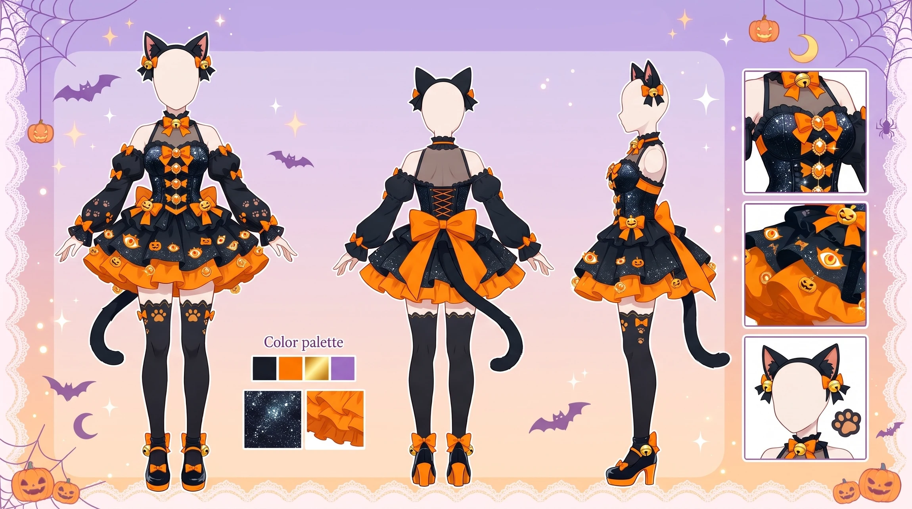
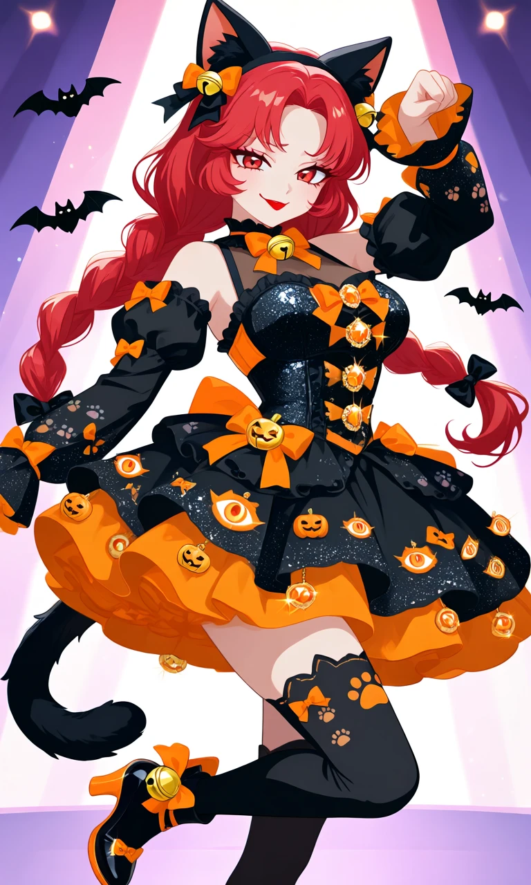
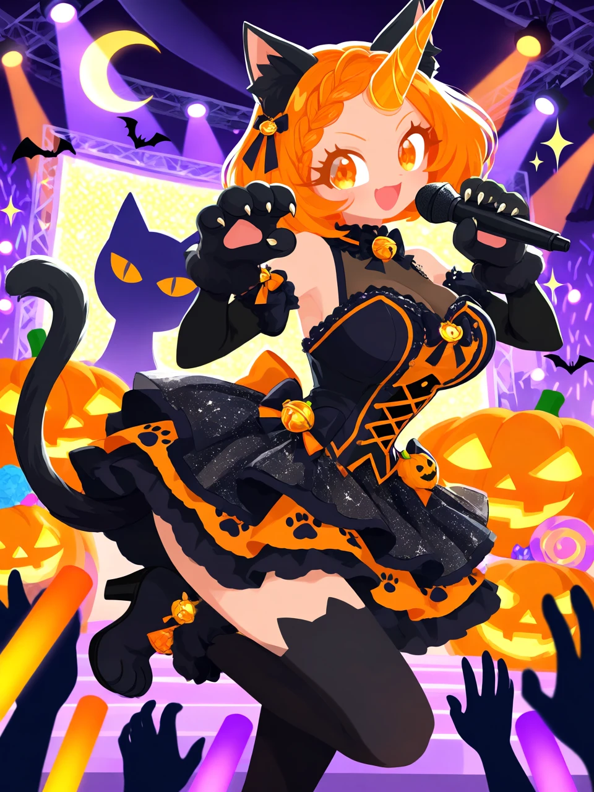

Trick-or-Treat Headliner

Outfit Prompt
An elaborate, glamorous black cat-inspired Halloween idol costume, combining playful feline details with sparkling stage fashion in a striking black, orange, and gold color palette.
The outfit features a fitted black-and-orange stage dress with a structured, feminine bodice made from sparkling black fabric. Bright orange ribbons, decorative black bows, tiny golden bells, and shimmering orange gemstones embellish the bodice, creating a charming Halloween idol aesthetic.
The dress has a short, voluminous layered ruffled skirt with alternating black and orange fabric accents. Delicate paw-print decorations, tiny pumpkin ornaments, miniature black bats, and glowing cat-eye motifs are scattered throughout the layered design. Small orange bows and golden bell charms decorate the ruffled edges, adding playful movement and sparkle.
Detached black sleeves feature delicate orange ribbon accents, small decorative bows, and subtle paw-print embellishments. The sleeves complement the fitted bodice while maintaining a cute, coordinated idol costume appearance.
Thigh-high black stockings feature charming orange accents, delicate paw-print patterns, and small decorative bows near the upper edges.
Cute black heeled ankle boots feature orange ribbon details, tiny golden bell ornaments, and subtle cat-paw-shaped decorative elements incorporated into the footwear design.
A pair of fluffy black cat ears forms a decorative headband, with small orange bows and tiny golden bells accenting the base of each ear. The headband can be worn with different hairstyles.
A long, fluffy black cat tail is attached securely to the back of the costume, complementing the cat-ear headband and completing the playful feline silhouette.
Additional decorative accessories include tiny pumpkin charms, black satin bows, sparkling orange gemstones, miniature bat ornaments, and glowing cat-eye motifs integrated throughout the costume.
The complete ensemble combines sparkling black fabrics, vivid orange ribbons, golden bells, layered ruffles, and adorable feline decorations. Its glamorous Halloween idol aesthetic balances cute black cat styling with festive pumpkin and bat motifs, creating a playful, mischievous, and beautifully coordinated performance outfit.
Outfit Examples



